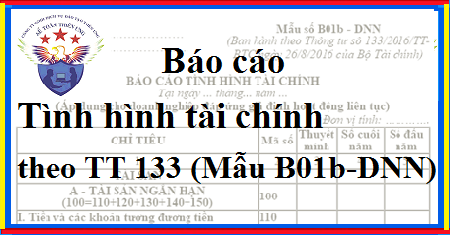

Mẫu Báo cáo tình hình tài chính B01b-DNN theo Thông tư 133, hướng dẫn cách làm Báo cáo tình hình tài chính Mẫu B01b-DNN, cơ sở lập và phương pháp lập các chỉ tiêu trên Báo cáo tình hình tài chính.
Theo điều 71 Thông tư 133 quy định:
- Tùy theo đặc điểm hoạt động và yêu cầu quản lý, doanh nghiệp có thể lựa chọn lập Báo cáo tình hình tài chính theo Mẫu số B01b - DNN hoặc Mẫu số B01a - DNN.
Mẫu B01a-DNN: Tài sản và nợ phải trả trên Báo cáo tình hình tài chính được trình bày theo tính thanh khoản giảm dần.
Mẫu B01b-DNN: Tài sản và nợ phải trả trên Báo cáo tình hình tài chính được trình bày thành ngắn hạn và dài hạn.
=> Thường các DN sẽ chọn Mẫu B01a-DNN.
=> Trường hợp năm trước DN bạn đã nộp mẫu nào -> Thì năm sau phải nộp theo mẫu đó.
VD: Năm 219 DN bạn nộp Mẫu 01a thì sang năm 2020 phải nộp theo Mẫu 01a.
------------------------------------------------------------------------------------------------------------
Bài viết này Kế toán Diệu Tâm hướng dẫn Lập Báo cáo tình hình tài chính Mẫu B01b – DNN.
1. Mẫu Báo cáo tình hình tài chính B01b-DNN theo Thông tư 133:
Báo cáo tình hình tài chính (Mẫu số B01b - DNN)
|
Đơn vị báo cáo: …………………
Địa chỉ: …………………………...
|
Mẫu số B01b - DNN (Ban hành theo Thông tư số 133/2016/TT-BTC ngày 26/8/2016 của Bộ Tài chính) |
BÁO CÁO TÌNH HÌNH TÀI CHÍNH
Tại ngày 15 tháng 09 năm 2026
(Áp dụng cho doanh nghiệp đáp ứng giả định hoạt động liên tục)
Tại ngày 15 tháng 09 năm 2026
(Áp dụng cho doanh nghiệp đáp ứng giả định hoạt động liên tục)
Đơn vị tính: ………….
| CHỈ TIÊU | Mã số | Thuyết minh | Số cuối năm | Số đầu năm |
| 1 | 2 | 3 | 4 | 5 |
| TÀI SẢN | ||||
|
A - TÀI SẢN NGẮN HẠN (100=110+120+130+140+150) |
100 | |||
| I. Tiền và các khoản tương đương tiền | 110 | |||
| II. Đầu tư tài chính ngắn hạn | 120 | |||
| 1. Chứng khoán kinh doanh | 121 | |||
| 2. Dự phòng giảm giá chứng khoán kinh doanh (*) | 122 | (...) | (...) | |
| 3. Đầu tư nắm giữ đến ngày đáo hạn ngắn hạn | 123 | |||
| III. Các khoản phải thu ngắn hạn | 130 | |||
| 1. Phải thu ngắn hạn của khách hàng | 131 | |||
| 2. Trả trước cho người bán ngắn hạn | 132 | |||
| 3. Phải thu ngắn hạn khác | 133 | |||
| 4. Tài sản thiếu chờ xử lý | 134 | |||
| 5. Dự phòng phải thu ngắn hạn khó đòi (*) | 135 | (...) | (...) | |
| IV. Hàng tồn kho | 140 | |||
| 1. Hàng tồn kho | 141 | |||
| 2. Dự phòng giảm giá hàng tồn kho (*) | 142 | (...) | (...) | |
| V. Tài sản ngắn hạn khác | 150 | |||
| 1. Thuế GTGT được khấu trừ | 151 | |||
| 2. Tài sản ngắn hạn khác | 152 | |||
|
B - TÀI SẢN DÀI HẠN
(200=210+220+230+240+250+260)
|
200 | |||
| I. Các khoản phải thu dài hạn | 210 | |||
| 1. Phải thu dài hạn của khách hàng | 211 | |||
| 2. Trả trước cho người bán dài hạn | 212 | |||
| 3. Vốn kinh doanh ở đơn vị trực thuộc | 213 | |||
| 4. Phải thu dài hạn khác | 214 | |||
| 5. Dự phòng phải thu dài hạn khó đòi (*) | 215 | (...) | (...) | |
| II. Tài sản cố định | 220 | |||
| - Nguyên giá | 221 | |||
| - Giá trị hao mòn lũy kế (*) | 222 | (...) | (...) | |
| III. Bất động sản đầu tư | 230 | |||
| - Nguyên giá | 231 | |||
| - Giá trị hao mòn lũy kế (*) | 232 | (...) | (...) | |
| IV. Xây dựng cơ bản dở dang | 240 | |||
| V. Đầu tư tài chính dài hạn | 250 | |||
| 1. Đầu tư góp vốn vào đơn vị khác | 251 | |||
| 2. Dự phòng tổn thất đầu tư vào đơn vị khác (*) | 252 | (...) | (...) | |
| 3. Đầu tư nắm giữ đến ngày đáo hạn dài hạn | 253 | |||
| VI. Tài sản dài hạn khác | 260 | |||
|
TỔNG CỘNG TÀI SẢN
(300=100+200)
|
300 | |||
| NGUỒN VỐN | ||||
|
C- NỢ PHẢI TRẢ
(400=410+420)
|
400 | |||
|
I. Nợ ngắn hạn 1. Phải trả người bán ngắn hạn 2. Người mua trả tiền trước ngắn hạn 3. Thuế và các khoản phải nộp Nhà nước 4. Phải trả người lao động 5. Phải trả ngắn hạn khác 6. Vay và nợ thuê tài chính ngắn hạn 7. Dự phòng phải trả ngắn hạn 8. Quỹ khen thưởng, phúc lợi |
410 411 412 413 414 415 416 417 418 |
|||
| II. Nợ dài hạn | 420 | |||
| 1. Phải trả người bán dài hạn | 421 | |||
| 2. Người mua trả tiền trước dài hạn | 422 | |||
| 3. Phải trả nội bộ về vốn kinh doanh | 423 | |||
| 4. Phải trả dài hạn khác | 424 | |||
| 5. Vay và nợ thuê tài chính dài hạn | 425 | |||
| 6. Dự phòng phải trả dài hạn | 426 | |||
| 7. Quỹ phát triển khoa học và công nghệ | 427 | |||
|
D - VỐN CHỦ SỞ HỮU
(500=511+512+513+514+515+516+517)
|
500 | |||
| 1. Vốn góp của chủ sở hữu | 511 | |||
| 2. Thặng dư vốn cổ phần | 512 | |||
| 3. Vốn khác của chủ sở hữu | 513 | |||
| 4. Cổ phiếu quỹ (*) | 514 | (...) | (...) | |
| 5. Chênh lệch tỷ giá hối đoái | 515 | |||
| 6. Các quỹ thuộc vốn chủ sở hữu | 516 | |||
| 7. Lợi nhuận sau thuế chưa phân phối | 517 | |||
|
TỔNG CỘNG NGUỒN VỐN
(600=400+500)
|
600 |
|
NGƯỜI LẬP BIỂU (Ký, họ tên) |
KẾ TOÁN TRƯỞNG (Ký, họ tên) |
Lập, ngày 15 tháng 09 năm 2026 NGƯỜI ĐẠI DIỆN THEO PHÁP LUẬT (Ký, họ tên, đóng dấu) |
Ghi chú:
(1) Những chỉ tiêu không có số liệu được miễn trình bày nhưng không được đánh lại “Mã số” chỉ tiêu.
(2) Số liệu trong các chỉ tiêu có dấu (*) được ghi bằng số âm dưới hình thức ghi trong ngoặc đơn (…).
(3) Đối với doanh nghiệp có kỳ kế toán năm là năm dương lịch (X) thì “Số cuối năm” có thể ghi là “31.12.X”; “Số đầu năm” có thể ghi là “01.01.X”.
(4) Đối với trường hợp thuê dịch vụ làm kế toán, làm kế toán trưởng thì phải ghi rõ số Giấy chứng nhận đăng ký hành nghề dịch vụ kế toán, tên đơn vị cung cấp dịch vụ kế toán.
Chú ý: Trường hợp DN bạn lựa chọn Mẫu B01a - DNN thì cách lập xem tại đây: Cách lập báo cáo tình hình tài chính Mẫu B01a - DNN
-------------------------------------------------------------------------------
2. Cách lập Báo cáo tình hình tài chính B01b - DNN:
2.1. Cơ sở lập Báo cáo tình hình tài chính
- Căn cứ vào sổ kế toán tổng hợp;
- Căn cứ vào sổ, thẻ kế toán chi tiết hoặc Bảng tổng hợp chi tiết;
- Căn cứ vào Báo cáo tình hình tài chính năm trước (để trình bày cột đầu năm).
2.2 Nội dung và phương pháp lập các chỉ tiêu trong Báo cáo tình hình tài chính của doanh nghiệp
a) Tài sản ngắn hạn (Mã số 100)
Là chỉ tiêu tổng hợp phản ánh tổng giá trị tiền và các khoản tương đương tiền, các khoản đầu tư tài chính ngắn hạn, các khoản phải thu ngắn hạn, hàng tồn kho và tài sản ngắn hạn khác có thể bán hay sử dụng trong vòng không quá 12 tháng hoặc một chu kỳ kinh doanh thông thường của doanh nghiệp tại thời điểm báo cáo.
Mã số 100 = Mã số 110 + Mã số 120 + Mã số 130 + Mã số 140 + Mã số 150.
- Tiền và các khoản tương đương tiền (Mã số 110)
Chỉ tiêu này phản ánh toàn bộ tiền mặt tại quỹ, tiền gửi ngân hàng không kỳ hạn và các khoản tương đương tiền hiện có của doanh nghiệp tại thời điểm báo cáo.
Số liệu để ghi vào chỉ tiêu này là tổng số dư Nợ của các TK 111, 112, số dư Nợ chi tiết của TK 1281 (chi tiết các khoản tiền gửi có kỳ hạn gốc không quá 3 tháng) và TK 1288 (chi tiết các khoản đủ tiêu chuẩn phân loại là tương đương tiền).
- Ngoài ra, trong quá trình lập báo cáo, nếu nhận thấy các khoản mục được phản ánh ở các tài khoản khác thỏa mãn định nghĩa tương tương tiền thì kế toán được phép trình bày trong chỉ tiêu này. Các khoản tương đương tiền có thể bao gồm: Kỳ phiếu ngân hàng, tín phiếu kho bạc, …
- Các khoản trước đây được phân loại là tương đương tiền nhưng quá hạn chưa thu hồi được phải chuyển sang trình bày tại các chỉ tiêu khác, phù hợp với nội dung của từng khoản mục.
- Khi phân tích các chỉ tiêu tài chính, ngoài các khoản tương đương tiền trình bày trong chỉ tiêu này, kế toán có thể coi tương đương tiền bao gồm cả các khoản có thời hạn thu hồi còn lại dưới 3 tháng kể từ ngày báo cáo (nhưng có kỳ hạn gốc trên 3 tháng) có khả năng chuyển đổi dễ dàng thành một lượng tiền xác định và không có rủi ro trong việc chuyển đổi thành tiền.
- Đầu tư tài chính ngắn hạn (Mã số 120)
Là chỉ tiêu tổng hợp phản ánh tổng giá trị của các khoản đầu tư tài chính ngắn hạn (sau khi đã trừ đi dự phòng giảm giá chứng khoán kinh doanh), bao gồm: Chứng khoán kinh doanh, các khoản đầu tư nắm giữ đến ngày đáo hạn có kỳ hạn còn lại không quá 12 tháng kể từ thời điểm báo cáo.
Các khoản đầu tư tài chính ngắn hạn được phản ánh trong chỉ tiêu này không bao gồm các khoản đầu tư ngắn hạn đã được trình bày trong chỉ tiêu “Tiền và các khoản tương đương tiền” (Mã số 110), các khoản phải thu về cho vay được trình bày trong chỉ tiêu “Phải thu ngắn hạn khác” (Mã số 133).
Mã số 120 = Mã số 121 + Mã số 122 + Mã số 123.
+ Chứng khoán kinh doanh (Mã số 121)
Chỉ tiêu này phản ánh giá trị các khoản chứng khoán và các công cụ tài chính khác nắm giữ vì mục đích kinh doanh tại thời điểm báo cáo (nắm giữ với mục đích chờ tăng giá để bán ra kiếm lời). Chỉ tiêu này có thể bao gồm cả các công cụ tài chính không được chứng khoán hóa, ví dụ như thương phiếu, hợp đồng kỳ hạn, hợp đồng hoán đổi… nắm giữ vì mục đích kinh doanh.
- Số liệu để ghi vào chỉ tiêu này là số dư Nợ của TK 121.
+ Dự phòng giảm giá chứng khoán kinh doanh (Mã số 122)
Chỉ tiêu này phản ánh khoản dự phòng giảm giá của các khoản chứng khoán kinh doanh tại thời điểm báo cáo.
- Số liệu để ghi vào chỉ tiêu này là số dư Có của TK 2291 và được ghi bằng số âm dưới hình thức ghi trong ngoặc đơn (...).
+ Đầu tư nắm giữ đến ngày đáo hạn ngắn hạn (Mã số 123)
Chỉ tiêu này phản ánh các khoản đầu tư nắm giữ đến ngày đáo hạn có kỳ hạn còn lại không quá 12 tháng hoặc trong một chu kỳ sản xuất, kinh doanh thông thường tại thời điểm báo cáo, như tiền gửi có kỳ hạn, trái phiếu, thương phiếu và các loại chứng khoán nợ khác. Chỉ tiêu này không bao gồm các khoản đầu tư nắm giữ đến ngày đáo hạn đã được trình bày trong chỉ tiêu “Tiền và các khoản tương đương tiền” (Mã số 110), các khoản phải thu về cho vay được trình bày trong chỉ tiêu “Phải thu ngắn hạn khác” (Mã số 133).
- Số liệu để ghi vào chỉ tiêu này là số dư Nợ chi tiết của TK 1281, 1288.
- Các khoản phải thu ngắn hạn (Mã số 130)
Là chỉ tiêu tổng hợp phản ánh toàn bộ giá trị của các khoản phải thu ngắn hạn có kỳ hạn thu hồi còn lại không quá 12 tháng hoặc trong một chu kỳ kinh doanh thông thường tại thời điểm báo cáo, như: Phải thu ngắn hạn của khách hàng, trả trước cho người bán ngắn hạn, phải thu ngắn hạn khác, tài sản thiếu chờ xử lý (sau khi đã trừ đi dự phòng phải thu ngắn hạn khó đòi).
Mã số 130 = Mã số 131 + Mã số 132 + Mã số 133 + Mã số 134 + Mã số 135
+ Phải thu ngắn hạn của khách hàng (Mã số 131)
Chỉ tiêu này phản ánh số tiền còn phải thu của khách hàng có kỳ hạn thu hồi còn lại không quá 12 tháng hoặc trong một chu kỳ kinh doanh thông thường tại thời điểm báo cáo.
- Số liệu để ghi vào chỉ tiêu này căn cứ vào tổng số dư Nợ chi tiết của TK 131 mở theo từng khách hàng.
+ Trả trước cho người bán ngắn hạn (Mã số 132)
Chỉ tiêu này phản ánh số tiền đã trả trước cho người bán để mua tài sản, dịch vụ và doanh nghiệp sẽ nhận được tài sản, dịch vụ trong thời hạn không quá 12 tháng hoặc trong một chu kỳ kinh doanh thông thường tại thời điểm báo cáo.
- Số liệu để ghi vào chỉ tiêu này căn cứ vào tổng số dư Nợ chi tiết của TK 331 mở theo từng người bán.
+ Phải thu ngắn hạn khác (Mã số 133)
Chỉ tiêu này phản ánh các khoản phải thu khác có kỳ hạn thu hồi còn lại không quá 12 tháng hoặc trong một chu kỳ kinh doanh thông thường tại thời điểm báo cáo, như: Phải thu về cho vay ngắn hạn; phải thu nội bộ ngắn hạn khác ngoài khoản phải thu về vốn kinh doanh ở đơn vị trực thuộc đã được phản ánh ở chỉ tiêu “Vốn kinh doanh ở đơn vị trực thuộc” (Mã số 213); các khoản đã chi hộ; phải thu về tiền lãi, cổ tức được chia; các khoản tạm ứng; các khoản cầm cố, ký cược, ký quỹ, cho mượn tạm thời,… mà doanh nghiệp được quyền thu hồi.
- Khi đơn vị cấp trên lập Báo cáo tình hình tài chính tổng hợp với đơn vị cấp dưới hạch toán phụ thuộc, khoản phải thu nội bộ ngắn hạn khác trong chỉ tiêu này được bù trừ với khoản phải trả nội bộ ngắn hạn khác trong chỉ tiêu “Phải trả ngắn hạn khác” (Mã số 415) trên Báo cáo tình hình tài chính của các đơn vị hạch toán phụ thuộc.
- Số liệu để ghi vào chỉ tiêu này là số dư Nợ chi tiết của các TK 1288 (chi tiết cho vay), 1368, 1386, 1388, 334, 338, 141.
+ Tài sản thiếu chờ xử lý (Mã số 134)
Chỉ tiêu này phản ánh các tài sản thiếu hụt, mất mát chưa rõ nguyên nhân đang chờ xử lý tại thời điểm báo cáo.
- Số liệu để ghi vào chỉ tiêu này là số dư Nợ TK 1381.
+ Dự phòng phải thu ngắn hạn khó đòi (Mã số 135)
Chỉ tiêu này phản ánh khoản dự phòng cho các khoản phải thu ngắn hạn khó đòi tại thời điểm báo cáo.
- Số liệu để ghi vào chỉ tiêu này là số dư Có chi tiết của TK 2293, chi tiết dự phòng cho các khoản phải thu ngắn hạn khó đòi và được ghi bằng số âm dưới hình thức ghi trong ngoặc đơn (...).
- Hàng tồn kho (Mã số 140)
Là chỉ tiêu tổng hợp phản ánh toàn bộ giá trị hiện có các loại hàng tồn kho dự trữ cho quá trình sản xuất, kinh doanh của doanh nghiệp (sau khi trừ đi dự phòng giảm giá hàng tồn kho) đến thời điểm báo cáo.
Mã số 140 = Mã số 141 + Mã số 142.
+ Hàng tồn kho (Mã số 141)
Chỉ tiêu này phản ánh tổng giá trị của hàng tồn kho thuộc quyền sở hữu của doanh nghiệp được luân chuyển trong vòng thời hạn không quá 12 tháng hoặc trong một chu kỳ kinh doanh thông thường tại thời điểm báo cáo.
- Số liệu để ghi vào chỉ tiêu này là số dư Nợ của các TK 151, 152, 153, 154, 155, 156, 157.
+ Dự phòng giảm giá hàng tồn kho (Mã số 142)
Chỉ tiêu này phản ánh khoản dự phòng giảm giá của các loại hàng tồn kho tại thời điểm báo cáo.
- Số liệu để ghi vào chỉ tiêu này là số dư Có của TK 2294 và được ghi bằng số âm dưới hình thức ghi trong ngoặc đơn (...).
- Tài sản ngắn hạn khác (Mã số 150)
Là chỉ tiêu tổng hợp phản ánh tổng giá trị các tài sản ngắn hạn khác có thời hạn thu hồi hoặc sử dụng không quá 12 tháng hoặc trong một chu kỳ kinh doanh thông thường tại thời điểm báo cáo, như thuế GTGT còn được khấu trừ và tài sản ngắn hạn khác.
Mã số 150 = Mã số 151 + Mã số 152.
+ Thuế giá trị gia tăng được khấu trừ (Mã số 151)
Chỉ tiêu này phản ánh số thuế GTGT còn được khấu trừ và số thuế GTGT còn được hoàn lại đến cuối năm báo cáo.
- Số liệu để ghi vào chỉ tiêu này căn cứ vào số dư Nợ của TK 133.
+ Tài sản ngắn hạn khác (Mã số 152)
Chỉ tiêu này phản ánh tài sản ngắn hạn khác có thời hạn thu hồi hoặc sử dụng không quá 12 tháng tại thời điểm báo cáo, gồm chi phí trả trước ngắn hạn, thuế và các khoản khác phải thu Nhà nước.
- Số liệu ghi vào chỉ tiêu này căn cứ vào số dư Nợ chi tiết của các TK 242, 333
b) Tài sản dài hạn (Mã số 200)
Là chỉ tiêu tổng hợp phản ánh trị giá các loại tài sản không được phản ánh trong chỉ tiêu tài sản ngắn hạn. Tài sản dài hạn là các tài sản có thời hạn thu hồi hoặc sử dụng trên 12 tháng tại thời điểm báo cáo, như: Các khoản phải thu dài hạn, tài sản cố định, bất động sản đầu tư, xây dựng cơ bản dở dang, đầu tư tài chính dài hạn và tài sản dài hạn khác.
Mã số 200 = Mã số 210 + Mã số 220 + Mã số 230 + Mã số 240 + Mã số 250 + Mã số 260.
- Các khoản phải thu dài hạn (Mã số 210)
Là chỉ tiêu tổng hợp phản ánh toàn bộ giá trị của các khoản phải thu có kỳ hạn thu hồi trên 12 tháng hoặc hơn một chu kỳ sản xuất, kinh doanh thông thường tại thời điểm báo cáo, như: Phải thu dài hạn của khách hàng, trả trước cho người bán dài hạn, vốn kinh doanh ở đơn vị trực thuộc, phải thu dài hạn khác (sau khi trừ đi dự phòng phải thu dài hạn khó đòi).
Mã số 210 = Mã số 211 + Mã số 212 + Mã số 213 + Mã số 214 + Mã số 215.
+ Phải thu dài hạn của khách hàng (Mã số 211)
Chỉ tiêu này phản ánh số tiền còn phải thu của khách hàng có kỳ hạn thu hồi trên 12 tháng hoặc hơn một chu kỳ sản xuất, kinh doanh thông thường tại thời điểm báo cáo.
- Số liệu để ghi vào chỉ tiêu này căn cứ vào tổng số dư Nợ chi tiết của TK 131 mở theo từng khách hàng.
+ Trả trước cho người bán dài hạn (Mã số 212)
Chỉ tiêu này phản ánh số tiền đã trả trước cho người bán để mua tài sản, dịch vụ và doanh nghiệp sẽ nhận được tài sản, dịch vụ trong thời hạn trên 12 tháng hoặc hơn một chu kỳ sản xuất, kinh doanh thông thường tại thời điểm báo cáo.
- Số liệu để ghi vào chỉ tiêu này căn cứ vào tổng số dư Nợ chi tiết của TK 331 mở theo từng người bán.
+ Vốn kinh doanh ở đơn vị trực thuộc (Mã số 213)
Chỉ tiêu này chỉ ghi trên Báo cáo tình hình tài chính của đơn vị cấp trên phản ánh số vốn kinh doanh đã giao cho các đơn vị hạch toán phụ thuộc.
Khi lập Báo cáo tình hình tài chính tổng hợp của toàn doanh nghiệp, chỉ tiêu này được bù trừ với chỉ tiêu “Phải trả nội bộ về vốn kinh doanh” (Mã số 423) hoặc chỉ tiêu "Vốn góp của chủ sở hữu" (Mã số 511) trên Báo cáo tình hình tài chính của các đơn vị hạch toán phụ thuộc, chi tiết phần vốn nhận của đơn vị cấp trên.
- Số liệu để ghi vào chỉ tiêu này căn cứ vào số dư Nợ của TK 1361.
+ Phải thu dài hạn khác (Mã số 214)
Chỉ tiêu này phản ánh các khoản phải thu khác có kỳ hạn thu hồi còn lại trên 12 tháng hoặc hơn một chu kỳ kinh doanh thông thường tại thời điểm báo cáo, như: Phải thu dài hạn về cho vay, phải thu nội bộ dài hạn khác ngoài khoản phải thu nội bộ về vốn kinh doanh đã được phản ánh ở chỉ tiêu “Vốn kinh doanh ở đơn vị trực thuộc” (Mã số 213), phải thu về các khoản đã chi hộ; các khoản tạm ứng, cầm cố, ký cược, ký quỹ, cho mượn…mà doanh nghiệp được quyền thu hồi.
- Khi đơn vị cấp trên lập Báo cáo tình hình tài chính tổng hợp với đơn vị cấp dưới hạch toán phụ thuộc, khoản phải thu nội bộ dài hạn trong chỉ tiêu này được bù trừ với khoản phải trả nội bộ dài hạn được trình bày trong chỉ tiêu “Phải trả dài hạn khác” (Mã số 424) trên Báo cáo tình hình tài chính của các đơn vị hạch toán phụ thuộc.
- Số liệu để ghi vào chỉ tiêu này căn cứ vào số dư Nợ chi tiết của các TK 1288 (chi tiết cho vay), 1368, 1386, 1388, 334, 338, 141.
+ Dự phòng phải thu dài hạn khó đòi (Mã số 215)
Chỉ tiêu này phản ánh khoản dự phòng cho các khoản phải thu dài hạn khó đòi tại thời điểm báo cáo.
- Số liệu để ghi vào chỉ tiêu này là số dư Có chi tiết của TK 2293, chi tiết dự phòng cho các khoản phải thu dài hạn khó đòi và được ghi bằng số âm dưới hình thức ghi trong ngoặc đơn (...).
- Tài sản cố định (Mã số 220)
Là chỉ tiêu tổng hợp phản ánh toàn bộ giá trị còn lại (Nguyên giá trừ giá trị hao mòn lũy kế) của các loại tài sản cố định tại thời điểm báo cáo.
Mã số 220 = Mã số 221 + Mã số 222.
+ Nguyên giá (Mã số 221)
Chỉ tiêu này phản ánh toàn bộ nguyên giá các loại tài sản cố định tại thời điểm báo cáo.
- Số liệu để ghi vào chỉ tiêu này là số dư Nợ của TK 211.
+ Giá trị hao mòn lũy kế (Mã số 222)
Chỉ tiêu này phản ánh toàn bộ giá trị đã hao mòn của các loại tài sản cố định lũy kế tại thời điểm báo cáo.
-Số liệu để ghi vào chỉ tiêu này là số dư Có của các TK 2141, 2142, 2143 và được ghi bằng số âm dưới hình thức ghi trong ngoặc đơn (...).
- Bất động sản đầu tư (Mã số 230)
Là chỉ tiêu tổng hợp phản ánh toàn bộ giá trị còn lại của các loại bất động sản đầu tư tại thời điểm báo cáo.
Mã số 230 = Mã số 231 + Mã số 232.
+ Nguyên giá (Mã số 231)
Chỉ tiêu này phản ánh toàn bộ nguyên giá của các loại bất động sản đầu tư tại thời điểm báo cáo sau khi đã trừ số tổn thất do suy giảm giá trị của bất động sản đầu tư nắm giữ chờ tăng giá.
- Số liệu để phản ánh vào chỉ tiêu này là số dư Nợ của TK 217.
+ Giá trị hao mòn lũy kế (Mã số 232)
Chỉ tiêu này phản ánh toàn bộ giá trị hao mòn lũy kế của bất động sản đầu tư dùng để cho thuê tại thời điểm báo cáo.
- Số liệu để ghi vào chỉ tiêu này là số dư Có của TK 2147 và được ghi bằng số âm dưới hình thức ghi trong ngoặc đơn (...).
- Xây dựng cơ bản dở dang (Mã số 240)
Chỉ tiêu này phản ánh toàn bộ trị giá tài sản cố định đang mua sắm, chi phí đầu tư xây dựng cơ bản, chi phí sửa chữa lớn tài sản cố định dở dang hoặc đã hoàn thành chưa bàn giao hoặc chưa đưa vào sử dụng.
- Số liệu để ghi vào chỉ tiêu này là số dư Nợ của TK 241.
- Đầu tư tài chính dài hạn (Mã số 250)
Là chỉ tiêu tổng hợp phản ánh tổng giá trị các khoản đầu tư tài chính dài hạn (sau khi trừ đi khoản dự phòng tổn thất đầu tư vào đơn vị khác) tại thời điểm báo cáo, như: Đầu tư góp vốn vào đơn vị khác, đầu tư nắm giữ đến ngày đáo hạn dài hạn có kỳ hạn còn lại trên 12 tháng hoặc hơn một chu kỳ sản xuất, kinh doanh thông thường tại thời điểm báo cáo.
Mã số 250 = Mã số 251 + Mã số 252 + Mã số 253.
+ Đầu tư góp vốn vào đơn vị khác (Mã số 251)
Chỉ tiêu này phản ánh các khoản đầu tư vào công ty liên doanh, liên kết và các khoản đầu tư khác.
- Số liệu để ghi vào chỉ tiêu này là số dư Nợ chi tiết của TK 228.
+ Dự phòng tổn thất đầu tư vào đơn vị khác (Mã số 252)
Chỉ tiêu này phản ánh khoản dự phòng tổn thất đầu tư vào đơn vị khác do đơn vị được đầu tư bị lỗ và nhà đầu tư có khả năng mất vốn tại thời điểm báo cáo.
- Số liệu để ghi vào chỉ tiêu này là số dư Có của TK 2292 và được ghi bằng số âm dưới hình thức ghi trong ngoặc đơn (...).
+ Đầu tư nắm giữ đến ngày đáo hạn dài hạn (Mã số 253)
Chỉ tiêu này phản ánh các khoản đầu tư nắm giữ đến ngày đáo hạn có kỳ hạn còn lại trên 12 tháng hoặc hơn một chu kỳ sản xuất kinh doanh thông thường kể từ thời điểm báo cáo, như tiền gửi có kỳ hạn, trái phiếu, thương phiếu và các loại chứng khoán nợ khác. Chỉ tiêu này không bao gồm các khoản phải thu về cho vay được trình bày trong chỉ tiêu “Phải thu dài hạn khác” (Mã số 214).
- Số liệu để ghi vào chỉ tiêu này là số dư Nợ chi tiết của các TK 1281, 1288.
- Tài sản dài hạn khác (Mã số 260)
Chỉ tiêu này phản ánh giá trị các tài sản dài hạn khác có thời hạn thu hồi trên 12 tháng hoặc hơn một chu kỳ sản xuất, kinh doanh thông thường tại thời điểm báo cáo như chi phí trả trước dài hạn, các khoản phải thu của Nhà nước dài hạn (nếu có) chưa được trình bày ở các chỉ tiêu trên.
Doanh nghiệp không phải tái phân loại chi phí trả trước dài hạn thành chi phí trả trước ngắn hạn.
- Số liệu để ghi vào chỉ tiêu này căn cứ vào số dư Nợ chi tiết của TK 242, 333.
- Tổng cộng tài sản (Mã số 300)
Là chỉ tiêu tổng hợp phản ánh tổng trị giá tài sản hiện có của doanh nghiệp tại thời điểm báo cáo, bao gồm tài sản ngắn hạn và tài sản dài hạn.
Mã số 300 = Mã số 100 + Mã số 200.
c) Nợ phải trả (Mã số 400)
Là chỉ tiêu tổng hợp phản ánh toàn bộ số nợ phải trả tại thời điểm báo cáo, gồm: Nợ ngắn hạn và nợ dài hạn.
Mã số 400 = Mã số 410 + Mã số 420.
- Nợ ngắn hạn (Mã số 410)
Là chỉ tiêu tổng hợp phản ánh tổng giá trị các khoản nợ còn phải trả có thời hạn thanh toán không quá 12 tháng hoặc dưới một chu kỳ sản xuất, kinh doanh thông thường tại thời điểm báo cáo, như: Các khoản vay và nợ thuê tài chính ngắn hạn, phải trả cho người bán ngắn hạn, người mua trả tiền trước ngắn hạn, thuế và các khoản phải nộp Nhà nước, phải trả người lao động, phải trả ngắn hạn khác, dự phòng phải trả ngắn hạn … tại thời điểm báo cáo.
Mã số 410 = Mã số 411 + Mã số 412 + Mã số 413 + Mã số 414 + Mã số 415 + Mã số 416 + Mã số 417 + Mã số 418.
+ Phải trả người bán ngắn hạn (Mã số 411)
Chỉ tiêu này phản ánh số tiền còn phải trả cho người bán có thời hạn thanh toán còn lại không quá 12 tháng hoặc trong một chu kỳ sản xuất, kinh doanh thông thường tại thời điểm báo cáo.
- Số liệu để ghi vào chỉ tiêu này căn cứ vào tổng số dư Có chi tiết của TK 331 mở cho từng người bán.
+ Người mua trả tiền trước ngắn hạn (Mã số 412)
Chỉ tiêu này phản ánh số tiền người mua ứng trước để mua sản phẩm, hàng hóa, dịch vụ, tài sản cố định, bất động sản đầu tư và doanh nghiệp có nghĩa vụ cung cấp trong thời hạn không quá 12 tháng hoặc trong một chu kỳ sản xuất, kinh doanh thông thường tại thời điểm báo cáo (không bao gồm các khoản doanh thu nhận trước).
- Số liệu để ghi vào chỉ tiêu này căn cứ vào tổng số dư Có chi tiết của TK 131 mở cho từng khách hàng.
+ Thuế và các khoản phải nộp Nhà nước (Mã số 413)
Chỉ tiêu này phản ánh tổng các khoản doanh nghiệp còn phải nộp cho Nhà nước tại thời điểm báo cáo, bao gồm cả các khoản thuế, phí, lệ phí và các khoản phải nộp khác.
- Số liệu để ghi vào chỉ tiêu này căn cứ vào tổng số dư Có chi tiết của TK 333.
+ Phải trả người lao động (Mã số 414)
Chỉ tiêu này phản ánh các khoản doanh nghiệp còn phải trả cho người lao động tại thời điểm báo cáo.
- Số liệu để ghi vào chỉ tiêu này căn cứ vào số dư Có chi tiết của TK 334.
+ Phải trả ngắn hạn khác (Mã số 415)
Chỉ tiêu này phản ánh các khoản phải trả khác có kỳ hạn thanh toán còn lại không quá 12 tháng hoặc trong một chu kỳ sản xuất, kinh doanh thông thường tại thời điểm báo cáo, ngoài các khoản nợ phải trả đã được phản ánh trong các chỉ tiêu khác, như: Chi phí phải trả ngắn hạn, phải trả nội bộ ngắn hạn khác ngoài khoản phải trả nội bộ về vốn kinh doanh đã được phản ánh ở chỉ tiêu “Phải trả nội bộ về vốn kinh doanh” (Mã số 423), doanh thu chưa thực hiện ngắn hạn, giá trị tài sản phát hiện thừa chưa rõ nguyên nhân, các khoản phải nộp cho cơ quan BHXH, KPCĐ, các khoản nhận ký cược, ký quỹ ngắn hạn…
Khi đơn vị cấp trên lập Báo cáo tài chính tổng hợp với các đơn vị cấp dưới hạch toán phụ thuộc, khoản phải trả nội bộ ngắn hạn trong chỉ tiêu này được bù trừ với khoản phải thu nội bộ ngắn hạn được trình bày trong chỉ tiêu “Phải thu ngắn hạn khác” (Mã số 133) trên Báo cáo tình hình tài chính của các đơn vị hạch toán phụ thuộc.
- Số liệu để ghi vào chỉ tiêu này căn cứ vào số dư Có chi tiết của các TK 335, 3368, 338, 1388.
+ Vay và nợ thuê tài chính ngắn hạn (Mã số 416)
Chỉ tiêu này phản ánh tổng giá trị các khoản doanh nghiệp đi vay kể cả vay dưới hình thức phát hành trái phiếu, còn nợ các ngân hàng, tổ chức, công ty tài chính và các đối tượng khác có kỳ hạn thanh toán còn lại không quá 12 tháng hoặc trong một chu kỳ sản xuất kinh doanh thông thường tại thời điểm báo cáo.
- Số liệu để ghi vào chỉ tiêu này căn cứ vào số dư Có chi tiết của TK 341.
+ Dự phòng phải trả ngắn hạn (Mã số 417)
Chỉ tiêu này phản ánh khoản dự phòng cho các khoản dự kiến phải trả không quá 12 tháng hoặc trong chu kỳ sản xuất, kinh doanh thông thường tiếp theo tại thời điểm báo cáo, như dự phòng bảo hành sản phẩm, hàng hóa, công trình xây dựng, các khoản chi phí trích trước để sửa chữa TSCĐ định kỳ, chi phí hoàn nguyên môi trường trích trước… Các khoản dự phòng phải trả thường được ước tính, chưa chắc chắn về thời gian phải trả, giá trị phải trả và doanh nghiệp chưa nhận được hàng hóa, dịch vụ từ nhà cung cấp.
- Số liệu để ghi vào chỉ tiêu này căn cứ vào số dư Có chi tiết của TK 352.
+ Quỹ khen thưởng, phúc lợi (Mã số 418)
Chỉ tiêu này phản ánh Quỹ khen thưởng, Quỹ phúc lợi, Quỹ thưởng ban quản lý điều hành chưa sử dụng tại thời điểm báo cáo.
- Số liệu để ghi vào chỉ tiêu này là số dư Có của TK 353.
- Nợ dài hạn (Mã số 420)
Là chỉ tiêu tổng hợp phản ánh tổng giá trị các khoản nợ dài hạn của doanh nghiệp bao gồm những khoản nợ có thời hạn thanh toán còn lại từ 12 tháng trở lên hoặc trên một chu kỳ sản xuất, kinh doanh thông thường tại thời điểm báo cáo, như: Khoản phải trả người bán dài hạn, người mua trả tiền trước dài hạn, phải trả nội bộ về vốn kinh doanh, các khoản phải trả dài hạn khác, vay và nợ thuê tài chính dài hạn, dự phòng phải trả dài hạn và quỹ phát triển khoa học và công nghệ tại thời điểm báo cáo.
Mã số 420 = Mã số 421 + Mã số 422 + Mã số 423 + Mã số 424 + Mã số 425 + Mã số 426 + Mã số 427.
+ Phải trả người bán dài hạn (Mã số 421)
Chỉ tiêu này phản ánh số tiền còn phải trả cho người bán có thời hạn thanh toán còn lại trên 12 tháng hoặc hơn một chu kỳ sản xuất, kinh doanh thông thường tại thời điểm báo cáo.
- Số liệu để ghi vào chỉ tiêu này căn cứ vào tổng số dư Có chi tiết của TK 331 mở cho từng người bán.
+ Người mua trả tiền trước dài hạn (Mã số 422)
Chỉ tiêu này phản ánh số tiền người mua ứng trước để mua sản phẩm, hàng hóa, dịch vụ, tài sản cố định, bất động sản đầu tư và thời hạn doanh nghiệp có nghĩa vụ cung cấp là trên 12 tháng hoặc hơn một chu kỳ sản xuất, kinh doanh thông thường tại thời điểm báo cáo (không bao gồm các khoản doanh thu nhận trước).
- Số liệu để ghi vào chỉ tiêu này căn cứ vào số dư Có chi tiết của TK 131 mở chi tiết cho từng khách hàng.
+ Phải trả nội bộ về vốn kinh doanh (Mã số 423)
Tùy thuộc vào đặc điểm hoạt động và mô hình quản lý của từng đơn vị, doanh nghiệp thực hiện phân cấp và quy định cho đơn vị hạch toán phụ thuộc ghi nhận khoản vốn do doanh nghiệp cấp vào chỉ tiêu này hoặc chỉ tiêu “Vốn góp của chủ sở hữu” (Mã số 511).
Chỉ tiêu này chỉ trình bày trên Báo cáo tình hình tài chính đơn vị cấp dưới không có tư cách pháp nhân hạch toán phụ thuộc, phản ánh các khoản đơn vị cấp dưới phải trả cho đơn vị cấp trên về vốn kinh doanh.
Khi đơn vị cấp trên lập Báo cáo tình hình tài chính tổng hợp toàn doanh nghiệp, chỉ tiêu này được bù trừ với chỉ tiêu “Vốn kinh doanh ở đơn vị trực thuộc” (Mã số 213) trên Báo cáo tình hình tài chính của đơn vị cấp trên.
- Số liệu để ghi vào chỉ tiêu này căn cứ vào chi tiết số dư Có TK 3361.
+ Phải trả dài hạn khác (Mã số 424)
Chỉ tiêu này phản ánh các khoản phải trả khác có kỳ hạn thanh toán còn lại trên 12 tháng hoặc hơn một chu kỳ sản xuất, kinh doanh thông thường tại thời điểm báo cáo, ngoài các khoản nợ phải trả đã được phản ánh trong các chỉ tiêu khác, như: Chi phí phải trả, phải trả nội bộ khác ngoài khoản phải trả nội bộ về vốn kinh doanh, doanh thu chưa thực hiện dài hạn, các khoản nhận ký cược, ký quỹ dài hạn…
Khi đơn vị cấp trên lập Báo cáo tài chính tổng hợp với các đơn vị cấp dưới hạch toán phụ thuộc, khoản phải trả nội bộ dài hạn trong chỉ tiêu này được bù trừ với khoản phải thu nội bộ dài hạn khác được trình bày trong chỉ tiêu “Phải thu dài hạn khác” (Mã số 214) trên Báo cáo tình hình tài chính của các đơn vị hạch toán phụ thuộc.
- Số liệu để ghi vào chỉ tiêu này căn cứ vào số dư Có chi tiết của các TK 335, 3368, 338, 1388.
+ Vay và nợ thuê tài chính dài hạn (Mã số 425)
Chỉ tiêu này phản ánh các khoản doanh nghiệp vay, nợ của các ngân hàng, tổ chức, công ty tài chính và các đối tượng khác, giá trị cổ phiếu ưu đãi theo mệnh giá mà bắt buộc người phát hành phải mua lại tại một thời điểm đã được xác định trong tương lai có kỳ hạn thanh toán còn lại trên 12 hoặc hơn một chu kỳ sản xuất kinh doanh thông thường tại thời điểm báo cáo, như: Tiền vay ngân hàng, tổ chức tài chính, khoản phải trả về tài sản cố định thuê tài chính...
- Số liệu để ghi vào chỉ tiêu này là số dư Có chi tiết các TK 341, 4111 (chi tiết loại cổ phiếu ưu đãi được phân loại là nợ phải trả).
+ Dự phòng phải trả dài hạn (Mã số 426)
Chỉ tiêu này phản ánh khoản dự phòng cho các khoản dự kiến phải trả sau 12 tháng hoặc sau một chu kỳ sản xuất, kinh doanh thông thường tiếp theo tại thời điểm báo cáo, như dự phòng bảo hành sản phẩm, hàng hóa, công trình xây dựng, dự phòng tái cơ cấu, các khoản chi phí trích trước để sửa chữa TSCĐ định kỳ, chi phí hoàn nguyên môi trường trích trước… Các khoản dự phòng phải trả thường được ước tính, chưa chắc chắn về thời gian phải trả, giá trị phải trả và doanh nghiệp chưa nhận được hàng hóa, dịch vụ từ nhà cung cấp.
- Số liệu để ghi vào chỉ tiêu này căn cứ vào số dư Có chi tiết của TK 352.
+ Quỹ phát triển khoa học và công nghệ (Mã số 427)
Chỉ tiêu này phản ánh số Quỹ phát triển khoa học và công nghệ chưa sử dụng tại thời điểm báo cáo.
- Số liệu để ghi vào chỉ tiêu này là số dư Có của TK 356.
d) Vốn chủ sở hữu (Mã số 500)
Là chỉ tiêu tổng hợp phản ánh các khoản vốn kinh doanh thuộc sở hữu của cổ đông, thành viên góp vốn, như: Vốn góp của chủ sở hữu, thặng dư vốn cổ phần, vốn khác của chủ sở hữu, cổ phiếu quỹ, các quỹ thuộc vốn chủ sở hữu, lợi nhuận sau thuế chưa phân phối, chênh lệch tỷ giá hối đoái.
Mã số 500 = Mã số 511 + Mã số 512 + Mã số 513 + Mã số 514 + Mã số 515 + Mã số 516 + Mã số 517
- Vốn góp của chủ sở hữu (Mã số 511)
Chỉ tiêu này phản ánh tổng số vốn đã thực góp của các chủ sở hữu vào doanh nghiệp (đối với công ty cổ phần phản ánh vốn góp của các cổ đông theo mệnh giá cổ phiếu) tại thời điểm báo cáo.
Tại đơn vị hạch toán phụ thuộc, chỉ tiêu này có thể phản ánh số vốn được cấp nếu doanh nghiệp quy định đơn vị hạch toán phụ thuộc ghi nhận vào TK 411.
- Số liệu để ghi vào chỉ tiêu này là số dư Có của TK 4111.
- Thặng dư vốn cổ phần (Mã số 512)
Chỉ tiêu này phản ánh thặng dư vốn cổ phần tại thời điểm báo cáo của công ty cổ phần.
- Số liệu để ghi vào chỉ tiêu này là số dư Có của TK 4112. Nếu TK 4112 có số dư Nợ thì chỉ tiêu này được ghi bằng số âm dưới hình thức ghi trong ngoặc đơn (...).
- Vốn khác của chủ sở hữu (Mã số 513)
Chỉ tiêu này phản ánh giá trị các khoản vốn khác của chủ sở hữu tại thời điểm báo cáo.
- Số liệu để ghi vào chỉ tiêu này là số dư Có TK 4118.
- Cổ phiếu quỹ (Mã số 514)
Chỉ tiêu này phản ánh giá trị cổ phiếu quỹ hiện có ở thời điểm báo cáo của công ty cổ phần.
- Số liệu để ghi vào chỉ tiêu này là số dư Nợ của TK 419 và được ghi bằng số âm dưới hình thức ghi trong ngoặc đơn (...).
- Chênh lệch tỷ giá hối đoái (Mã số 515)
Trường hợp đơn vị sử dụng đồng tiền khác Đồng Việt Nam làm đơn vị tiền tệ trong kế toán, chỉ tiêu này phản ánh khoản chênh lệch tỷ giá hối đoái do chuyển đổi Báo cáo tài chính sang Đồng Việt Nam.
- Các quỹ thuộc vốn chủ sở hữu (Mã số 516)
Chỉ tiêu này phản ánh các quỹ thuộc vốn chủ sở hữu chưa sử dụng tại thời điểm báo cáo.
- Số liệu để ghi vào chỉ tiêu này là số dư Có TK 418.
- Lợi nhuận sau thuế chưa phân phối (Mã số 517)
Chỉ tiêu này phản ánh số lãi (hoặc lỗ) sau thuế chưa phân phối tại thời điểm báo cáo.
- Số liệu để ghi vào chỉ tiêu này là số dư Có của TK 421. Trường hợp TK 421 có số dư Nợ thì số liệu chỉ tiêu này được ghi bằng số âm dưới hình thức ghi trong ngoặc đơn (...).
- Tổng cộng nguồn vốn (Mã số 600)
Phản ánh tổng số các nguồn vốn hình thành tài sản của doanh nghiệp tại thời điểm báo cáo.
Mã số 600 = Mã số 400 + Mã số 500.
| Chỉ tiêu “Tổng cộng Tài sản Mã số 300” | = | Chỉ tiêu “Tổng cộng Nguồn vốn Mã số 600” |
-----------------------------------------------------------------
Tải Mẫu báo cáo tình hình tài chính trên Excel:
---------------------------------------------------------------------------------------------------
Kế toán Diệu Tâm xin chúc bạn thành công!
